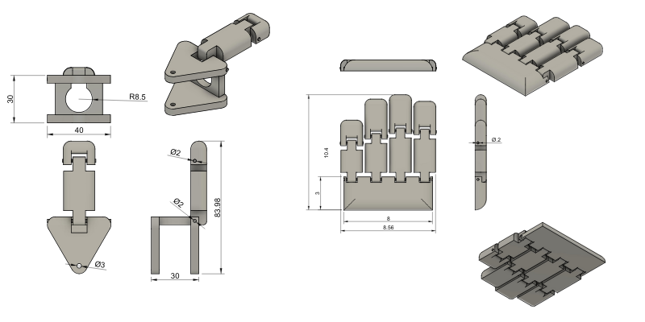
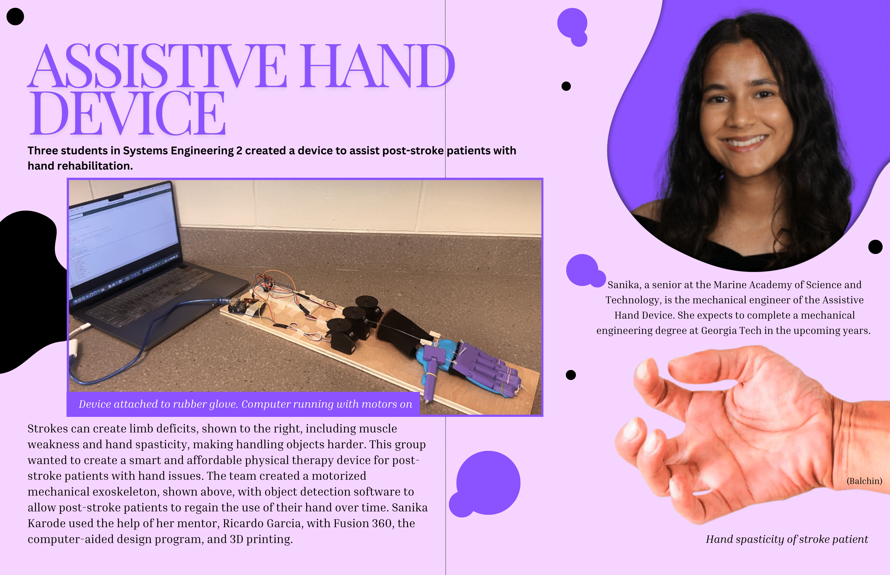

Assistive Hand Exoskeleton
Systems Engineering Capstone | Rehabilitation Robotics

Project Overview
Post-stroke patients often suffer from muscle weakness and hand spasticity, making everyday object handling nearly impossible. I designed and prototyped a mechanical hand exoskeleton that assists in hand rehabilitation by automating flexion and extension. The device uses an integrated system of monofilament lines and servo motors to physically guide the user's hand through a therapeutic range of motion.

Mechanical Design & Iteration
The core challenge was creating a joint system that was slim enough to fit on a human hand while remaining structurally sound enough to force finger flexion.
- First Iteration: Initial designs were too bulky. The fingers brushed against each other, and the joint gap was insufficient, leading to restricted range of motion.
- Final Optimization: Slimmed the finger width and increased the bottom joint gap. I also completely redesigned the thumb to allow for multiaxial movement, moving away from the original design which severely limited opposition.
- Assembly: Used elastic strings through the dorsal side of the fingers for passive extension and monofilament through the palmar side for active flexion.

Technical Execution
- Object Detection Integration: Collaborated with electrical teammates to integrate the mechanical system with a Raspberry Pi camera. The software identifies objects and signals the servo motors to pull the monofilament a specific distance based on the required grip strength.
- Testing: Conducted system-wide testing to ensure that when tension was released by the motors, the passive elastic tension successfully returned the fingers to a neutral, extended position.
Key Results
The project culminated in a working prototype presented at the Capstone Exhibit Night. It successfully demonstrated the ability to bridge Fusion 360 parametric modeling with real-world Arduino actuation, creating a low-cost assistive tool that could significantly improve the quality of life for stroke survivors.
Final Journal Article

Page 1 of 3